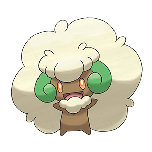
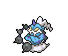
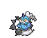
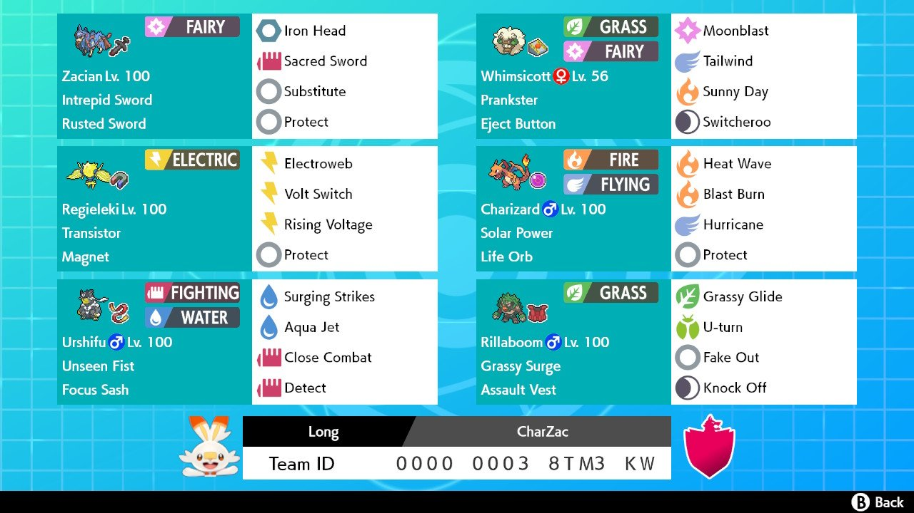

Quá Trình Build Team
Sau các thất bại gần nhất của mình ở các giải đấu thuộc Series 8 vì sử dụng các team khá là off-meta, mình quyết định ở giải này, mình sẽ build một team theo chiều hướng meta, nhưng vẫn mang chút chất cá nhân của mình.


Với việc Players Cup Global Exhibition cũng vừa khép lại một khoảng thời gian không lâu, nên việc tìm kiếm nguồn cảm hứng cũng khá dễ dàng. Mình quyết định lấy team của Wonseok Jung – á quân Global Exhibition làm gốc để build team.

Mình rất thích thú với việc sử dụng cặp đôi Zacian – Charizard vì khả năng ép sân đối thủ cực kỳ tốt với Behemoth Blade & G-Max Wildfire và Charizard còn có thể bổ trợ cho Zacian với Max Airstream. Thay vì Sableye để gọi nắng, mình quyết định lựa chọn Whimsicott bởi vì cảm giác sử dụng đa dạng hơn Sableye.

Ngay lập tức vấn đề hiện ra là match-up với Kyogre khá khổ sở, vì thế theo lẽ tự nhiên, mình lựa chọn ngay hai con counter chính với Kyogre là Regieleki và Rillaboom. Rillaboom mang lại áp lực Fake Out cùng với khả năng dọn dẹp với Grassy Glide, trong khi Regieleki giúp kiểm soát tốc độ với Electroweb và là một ứng cử viên Dynamax khác khi cần.
Ở slot cuối cùng, ban đầu mình thử với Landorus-Therian. Tuy nhiên trong quá trình thử, mình nhận thấy nó khá là không phù hợp với team vì khả năng tấn công ngoài Dynamax của nó khá phản team trong khi đó việc Dynamax gần như hoàn toàn nhường cho Charizard. Bên cạnh đó, mình nhận thấy team khá yếu với các team comp có cả Rotom-H lẫn Landorus-T của đối phương. Vì vậy, slot cuối này mình cần một Pokémon có thể gây áp lực tới cả hai Pokémon kể trên, đồng thời vẫn có thể hoạt động tốt mà không cần Dynamax. Sau một khoảng thời gian phân vân, cuối cùng mình lựa chọn Urshifu-Rapid-Strike. Nó cho phép mình giải quyết vấn đề trên và hoàn thành core tam giác Fire - Water - Grass. Và cuối cùng mình đã có 6 Pokémon ưng ý của mình.
Với việc lựa chọn Pokémon được hoàn thành, việc tiếp theo sẽ là quyết định Moveset và Item cho team. Mình sẽ đi sâu về chi tiết từng thành viên trong team ở phần tiếp theo.
Giải Thích Team

Whimsicott (F) @ Eject Button
Ability: Prankster
Level: 50
EVs: 252 SpA / 4 SpD / 252 Spe
Timid Nature
IVs: 0 Atk
- Moonblast
- Sunny Day
Tailwind
- Switcheroo
Whimsicott là một mắt xích tối quan trọng trong team với khả năng điều tiết nhịp độ trận đấu. Prankster Tailwind của Whimsicott giúp kiểm soát tốc độ cực kỳ hiệu quả, trong khi Sunny Day tạo nắng giúp Charizard gây damage mạnh nhất có thể. Moonblast là đòn tấn công duy nhất của Whimsicott.
Để tối ưu khả năng Dynamax của team, Whimsicott này được build theo lối chiến thuật TrickEject với Item Eject Button & đòn Switcheroo để gây áp lực loại bỏ ngay các đối thủ Dynamax cùng thời điểm với Charizard của mình.
252 SpA Whimsicott Moonblast vs. 4 HP / 0 SpD Urshifu-Rapid-Strike: 174-206 (98.8 - 117%) -- 93.8% chance to OHKO

Charizard-Gmax (M) @ Life Orb
Ability: Solar Power
Level: 50
EVs: 252 SpA / 4 SpD / 252 Spe
Timid Nature
IVs: 0 Atk
- Blast Burn
- Heat Wave
Hurricane
- Protect
Charizard là Pokémon Dynamax (đúng hơn là Gigantamax) chính trong team. Với G-Max Wildfire đặc biệt cộng thêm nắng từ Whimsicott, Charizard có thể thiêu rụi bất cứ đối thủ nào trong một nốt nhạc. Không chỉ thế, Max Airstream có thể đẩy tốc độ của chính bản thân cùng đồng đội nó lên một bậc. Một trong những mục tiêu chính của team là tìm cách đưa Zacian vào kế bên Charizard đang Snowball trong trạng thái G-Max.
Với việc gần như luôn luôn G-Max Charizard, mình lựa chọn hai STAB gây damage lớn nhất là Blast Burn và Hurricane để lần lượt sản xuất ra các đòn G-Max Wildfire 150 BP & Max Airstream 140 BP, cùng với Life Orb là item để giúp Charizard này gây damage nhiều nhất có thể. Protect cần thiết để bảo vệ Charizard và để có thể chọn vị trí cho các turn tiếp theo. Heat Wave là đòn STAB Fire thứ hai đơn giản để mình có thứ gì đó để sử dụng cho các trường hợp Charizard không thể G-Max được.
252 SpA Life Orb Solar Power Charizard G-Max Wildfire (Blast Burn) vs. 212 HP / 4 SpD Dynamax Landorus-Therian in Sun: 394-464 (103.1 - 121.4%) -- guaranteed OHKO
252 SpA Life Orb Solar Power Charizard G-Max Wildfire (Blast Burn) vs. 236 HP / 4 SpD Dynamax Groudon in Sun: 359-422 (87.5 - 102.9%) -- 18.8% chance to OHKO

Zacian-Crowned @ Rusted Sword
Ability: Intrepid Sword
Level: 50
EVs: 252 HP / 76 Atk / 4 Def / 12 SpD / 164 Spe
Adamant Nature
- Behemoth Blade
- Sacred Sword
- Substitute
- Protect
Đây là một Zacian khá cơ bản trong metagame hiện tại. Tuy nhiên những gì mà nó mang lại cho team là cực kỳ quan trọng.
Zacian có thể trừng trị bất kỳ Pokémon nào, đặc biệt khi đối phương dám Dynamax trước mặt Zacian với Behemoth Blade. Sacred Sword được sử dụng làm coverage move cần thiết cho Zacian. Substitute và Protect là hai công cụ Zacian thường dùng cho các turn phòng thủ, giúp Zacian đạt được vị trí cần thiết ở các turn đấu tiếp theo.
EV ở đây mình đổ vào 164 EVs vào Spe để giúp Zacian đạt được chỉ số Spe là 189, vừa đủ để outspeed Cinderace (188) một điểm. 76+ Atk là stat bump đầu tiên của Adamant Zacian, giúp nó nhảy từ 218 lên 220 Atk, khoảng cách này đặc biệt quan trọng hơn với Intrepid Sword giúp Zacian được tăng một bậc Atk mỗi khi được bước vào sàn đấu. Phần còn lại được đổ đầy vào HP và chia ra giữa Def và Sp.Def.
+1 76+ Atk Zacian-Crowned Behemoth Blade vs. 4 HP / 0 Def Dynamax Calyrex-Shadow: 372-440 (105.6 - 125%) -- guaranteed OHKO
+1 76+ Atk Zacian-Crowned Behemoth Blade vs. 108 HP / 0 Def Dynamax Venusaur: 360-426 (106.5 - 126%) -- guaranteed OHKO
252+ SpA Magnet Transistor Regieleki Max Lightning (Thunderbolt) vs. 252 HP / 12 SpD Zacian-Crowned: 160-190 (80.4 - 95.4%) -- guaranteed 2HKO
4 Atk Incineroar Flare Blitz vs. 252 HP / 4 Def Zacian-Crowned: 134-162 (67.3 - 81.4%) -- guaranteed 2HKO
Regieleki @ Magnet
Ability: Transistor
Level: 50
EVs: 252 SpA / 4 SpD / 252 Spe
Modest Nature
IVs: 0 Atk
- Rising Voltage
- Electroweb
- Volt Switch
- Protect
Regieleki kiêm hai vai trò hỗ trợ kiểm soát tốc độ với Whimsicott bằng Electroweb, đồng thời cũng có thể làm Max Mon nếu điều kiện cho phép. Volt Switch cũng cho phép Regieleki trở thành một pivot nhanh, tạo điều kiện setup vị trí tốt cho team. Rising Voltage được chọn thay vì Thunderbolt để giúp cho Regieleki có thể spam Max Lightning 140 BP, đồng thời vẫn giữ được sát thương trên khi hết Dynamax.
252+ SpA Magnet Transistor Regieleki Max Lightning (Rising Voltage) vs. 236 HP / 100+ SpD Incineroar: 175-207 (87.5 - 103.5%) -- 18.8% chance to OHKO
Rillaboom-Gmax (M) @ Assault Vest
Ability: Grassy Surge
Level: 50
EVs: 132 HP / 252 Atk / 36 Def / 76 SpD / 12 Spe
Adamant Nature
- Grassy Glide
- U-turn
- Fake Out
- Knock Off
Đây là set Rillaboom mình đã sử dụng suốt Series 10 và kì World Cup of Pokémon. Rillaboom này được tối ưu hoá HP cho việc hồi máu trong Grassy Terrain. 76 Sp.Def giúp Rillaboom đạt đúng chỉ số 100 Sp.Def, cùng với Assault Vest giúp Rillaboom tăng cường đáng kể khả năng chống chịu các đòn đánh Special. Phần còn lại mình chia vào Speed để có thể outspeed một số Rillaboom, và Def.
252+ Atk Rillaboom Grassy Glide vs. 4 HP / 0 Def Kyogre in Grassy Terrain: 182-216 (103.4 - 122.7%) -- guaranteed OHKO
252 SpA Life Orb Calyrex-Shadow Astral Barrage vs. 132 HP / 76 SpD Assault Vest Rillaboom: 95-113 (49.4 - 58.8%) -- 67.6% chance to 2HKO after Grassy Terrain recovery
252 SpA Tornadus Hurricane vs. 132 HP / 76 SpD Assault Vest Rillaboom: 150-176 (78.1 - 91.6%) -- guaranteed 2HKO
Urshifu-Rapid-Strike-Gmax (M) @ Focus Sash
Ability: Unseen Fist
Level: 50
EVs: 252 Atk / 4 SpD / 252 Spe
Jolly Nature
- Surging Strikes
- Aqua Jet
- Close Combat
- Detect
Urshifu-R đóng vai trò là cleaner / opener của team tuỳ thuộc vào từng set đấu. Nó có thể gây áp lực đầu game lên những Landorus, Rotom-H, Incineroar. Nó có thể ở phía sau chờ đợi cơ hội và dọn dẹp những gì còn sót lại sau thời gian chinh phạt của Charizard và Zacian. Nó còn có thể được sử dụng làm switch-in cho những đòn hệ Fire định nhắm đến Zacian / Whimsicott / Rillaboom.
-1 252 Atk Urshifu-Rapid-Strike Surging Strikes (3 hits) vs. 36 HP / 4 Def Dynamax Landorus-Therian on a critical hit: 222-270 (65.6 - 79.8%) -- guaranteed 2HKO
252 Atk Urshifu-Rapid-Strike Surging Strikes (3 hits) vs. 252 HP / 0 Def Dynamax Rotom-Heat on a critical hit: 186-222 (59.2 - 70.7%) -- guaranteed 2HKO
Các Cách Bắt Đầu Trận
Về cơ bản, team có khá nhiều cách chơi khác nhau mà bạn có thể dùng theo lối chơi của bản thân. Ở đây mình sẽ điểm qua một số cách lead team mà mình thường dùng để mở đầu các game tuỳ theo cách chơi:
+
/
Gây áp lực & snowball ngay đầu trận
+
Kiểm soát tốc độ sàn đấu một cách triệt để
+
Rillaboom + Urshifu
Quá Trình Thi Đấu
Mình sẽ kể lại một số chi tiết trong các trận đấu của mình tại giải!
Nhánh Thắng
| Vòng | Kết quả | Đối thủ | Team | Paste | Video |
|---|---|---|---|---|---|
| W1 | WW |
Nguyên Bùi (VVVV) |
|

Ban đầu mình khá lo sợ với Lunala và Meteor Beam. Tuy nhiên với việc Nguyên không lead Lunala cả hai game, mình chỉ việc G-Max Charizard và sweep.
| Vòng | Kết quả | Đối thủ | Team | Paste | Video |
|---|---|---|---|---|---|
| W2 | WW |
Gia Long (Glenn) |
|

 

Đây là một Match-Up mà nếu mình kiểm soát tốt tốc độ thì khả năng chiến thắng sẽ rất cao, và mình đã làm được qua cả hai game, luôn đặt các Sweeper team bạn vào thế thua thiệt với cả Charizard với Zacian ít nhất một bậc tốc độ.
| Vòng | Kết quả | Đối thủ | Team | Paste | Video |
|---|---|---|---|---|---|
| W3 | WLL |
Đồng Minh (Nhiên Hina) |
|


Mình khá sợ Match-Up này vì khả năng kiểm soát nhịp độ và hạn chế Zacian của cả team. Ưu tiên đặt ra là không cho Landorus DMax và hạn chế TWave đến từ Grimmsnarl.
Mình lead Whimsicott + Charizard vs Yveltal vs Grimmsnarl. Một lối đánh thụ động đến từ cả hai bên. G1 ngã mũ khoảnh khắc mà mình được free Substitute với Zacian.
Nắm giữ tâm thế Subs Zacian = win, mình quyết định lead Whimsicott + Zacian, tuy nhiên đã bị bắt bài với việc Đồng Minh lead Landorus + Grimmsnarl & bắt bài turn 1 của mình. Khá khó để mình lấy lại nhịp độ trận đấu sau đó và mình đã thất bại.
Mình muốn counter lead G2 của Đồng Minh bằng Rillaboom và Urshifu, nhưng một lần nữa bị out-lead với cặp nắng Torkoal + Venusaur. Không có Whimsicott = không speed control và nó khiến mình mất luôn G3 và set đấu này.
Nhánh Thua
| Vòng | Kết quả | Đối thủ | Team | Paste | Video |
|---|---|---|---|---|---|
| L4 | WW |
Thịnh Phan (funyy) |
|

Nhiệm vụ chính khi bước vào team preview, là tạo điều kiện cho Zacian snowball endgame, loại bỏ Incineroar và có lợi thế về tốc độ.
Lead Whimsicott + Regieleki vs Incineroar & Dragonite. Nhận ra lối đánh có phần thụ động của Thịnh nên mình đã chủ động chọn vị trí ngay cho Zacian và xử lý thành công Incineroar. Với việc Thịnh chọn D-Max Groudon trong khoảng thời gian Zacian còn nằm trong Substitute, và vì thế đánh mất nhịp độ trận đấu, mình đã lấy được G1.
Quyết định gây áp lực ngay với Whimsicott + Charizard. Quyết định DMax Dragonite của Thịnh có phần làm mình bất ngờ. Nhưng may mắn với việc Dragonite của Thịnh được build không có tốc cộng với một pha Crit đúng thời điểm của Zacian mà mình nhanh chóng lấy luôn Game 2.
| Vòng | Kết quả | Đối thủ | Team | Paste | Video |
|---|---|---|---|---|---|
| L5 | WW |
Đức Nguyễn (Akr0) |
|
Đây là một Match-Up khá tệ cho Đức vì Whimsicott Charizard gần như phá huỷ nguyên đội hình của bạn. Và thực tế xảy ra đúng như vậy khi cặp đôi trên kết thúc cả hai trận chỉ trong vòng vài turn đấu.
| Vòng | Kết quả | Đối thủ | Team | Paste | Video |
|---|---|---|---|---|---|
| Loser's Final |
WW |
Đồng Minh (Nhiên Hina) |
|
Ở lần gặp lại Đồng Minh, lại không có gì quá đặc biệt để giải thích ngoại trừ việc mình đã quá may mắn ở cả hai game đấu với hai pha Crit lần lượt vào Landorus-T ở G1 & Grimmsnarl ở G2.
Chung Kết Tổng
| Vòng | Kết quả | Đối thủ | Team | Paste | Video |
|---|---|---|---|---|---|
| Grand Final | WW |
Đạt Lương (Ken) |
|


Trên bề mặt thì mình có vẻ nắm lợi thế khá rõ về mặt tương khắc hệ, nhưng mình vẫn khá lo sợ trước hai ngưỡng speed giữa Regieleki & Torkoal khiến cho việc câu Trick Room phải được tính toán làm sao để có thể loại bỏ Regieleki trước khi hết Trick Room.
Set đấu đầu diễn ra khá lợi thế dành cho mình khi Đạt quyết định lead & Dynamax Regieleki từ sớm. Mặc dù mình có bị predict khá nhiều trong G1, nhưng với việc Đạt tỏ ra thụ động trong việc đổi mon ép sân giúp mình có thể loại bỏ Regieleki từ sớm và câu Trick Room khá dễ dàng. G2 với việc mình loại bỏ cả hai TR setter trong vòng 2 turn đấu đầu tiên, mọi thứ an bài ngay lập tức.
| Vòng | Kết quả | Đối thủ | Team | Paste | Video |
|---|---|---|---|---|---|
| Grand Final Reset |
WLW |
Đạt Lương (Ken) |
|
Mình vẫn lead Regieleki & Zacian như set trước vs Calyrex-I & Indeedee-F. Một pha Shadow Ball + Glacial Lance có phần hơi gượng ép mở ra cơ hội để mình cấu Sash của Indeedee và free switch cho Charizard vào và kết thúc G1.
Cả hai đều lead giống G1. Lần này Đạt đánh chuẩn chỉ hơn với việc set Trick Room sớm. Mình đã mắc sai lầm ở việc để Regieleki của bản thân chết trong khi vẫn còn đó Regieleki của Đạt. Kết quả là mình thua G2.
Mình quyết định chọn bài tẩy Whimsicott + Charizard vs Regieleki & Mimikyu. Nhiệm vụ của Charizard chỉ là đánh được Wildfire một lần và nó đã làm được. Sau đó Zacian ra và dọn dẹp hết phần còn lại. Đáng chỉ ra sai lầm của mình khi không Switcheroo lấy đi Weakness Policy của Calyrex-I & quả hụt Wisps cực đáng tiếc của Đạt. Nhưng chuyện gì xảy ra đã xảy ra, và mình đã giành được chiến thắng G3 và chung cuộc!
Lời Kết
Và qua chặng đường dài, cuối cùng mình cũng đã trở thành nhà vô địch đầu tiên của hệ thống Play! Pokémon Vietnam Circuit! Quả thật là chiến thắng mang nhiều ý nghĩa với mình và góp phần củng cố sự tự tin của mình kể từ khi khi tham gia vào VGC vào năm 2020!
Mục tiêu đề ra cho năm 2022 của mình là vẫn luôn cải thiện bản thân làm một VGC player và mang lại nhiều bài viết hay để góp phần giúp nền VGC nước nhà vẫn luôn tiến bộ không ngừng.
Cảm ơn mọi người đã đọc! Và chúc các bạn vui vẻ khi dùng team của mình!
